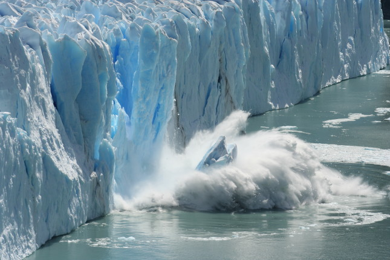
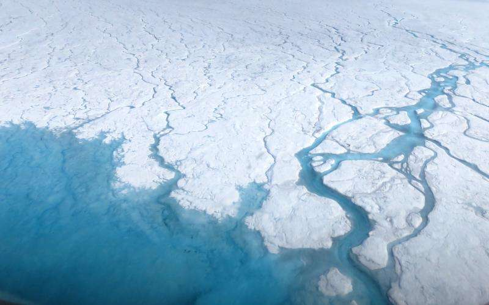

Glaciers are melting, sea levels are rising, cloud forests are dying, and wildlife is scrambling to keep pace. It has become clear that humans have caused most of the past century's warming by releasing heat-trapping gases as we power our modern lives. Called greenhouse gases, their levels are higher now than at any time in the last 800,000 years.
We often call the result global warming, but it is causing a set of changes to the Earth's climate, or long-term weather patterns, that varies from place to place. While many people think of global warming and climate change as synonyms, scientists use “climate change” when describing the complex shifts now affecting our planet’s weather and climate systems—in part because some areas actually get cooler in the short term.
Climate change encompasses not only rising average temperatures but also extreme weather events, shifting wildlife populations and habitats, rising seas, and a range of other impacts. All of those changes are emerging as humans continue to add heat-trapping greenhouse gases to the atmosphere, changing the rhythms of climate that all living things have come to rely on.
What will we do—what can we do—to slow this human-caused warming? How will we cope with the changes we've already set into motion? While we struggle to figure it all out, the fate of the Earth as we know it—coasts, forests, farms, and snow-capped mountains—hangs in the balance.
 An iceberg melts in the waters off Antarctica. Climate change has accelerated the rate of ice loss across the continent.Photography by Paul Nicklen ·
 Greenland is covered with a vast amount of ice—but the ice is melting four times faster than thought, suggesting that Greenland may be approaching a dangerous tipping point, with implications for global sea-level rise.Photography by Michael Melford ·
The rapid rise in greenhouse gases is a problem because it’s changing the climate faster than some living things can adapt to. Also, a new and more unpredictable climate poses unique challenges to all life.
Historically, Earth's climate has regularly shifted between temperatures like those we see today and temperatures cold enough to cover much of North America and Europe with ice. The difference between average global temperatures today and during those ice ages is only about 9 degrees Fahrenheit (5 degrees Celsius), and the swings have tended to happen slowly, over hundreds of thousands of years.
But with concentrations of greenhouse gases rising, Earth's remaining ice sheets such as Greenland and Antarctica are starting to melt too. That extra water could raise sea levels significantly, and quickly. By 2050, sea levels are predicted to rise between one and 2.3 feet as glaciers melt.
As the mercury rises, the climate can change in unexpected ways. In addition to sea levels rising, weather can become more extreme. This means more intense major storms, more rain followed by longer and drier droughts—a challenge for growing crops—changes in the ranges in which plants and animals can live, and loss of water supplies that have historically come from glaciers.
Article credit to Christina Nunez ·
Save energy at home. Much of our electricity and heat is powered by coal, oil and gas. Use less energy by lowering your heating and cooling, switching to LED light bulbs and energy-efficient electric appliances, washing your laundry with cold water or hanging things to dry instead of using a dryer.
Walk, cycle or take public transport. The world’s roads are clogged with vehicles, most of them burning diesel or petrol. Walking or riding a bike instead of driving will reduce greenhouse gas emissions – and help your health and fitness. For longer distances, consider taking a train or bus. And carpool whenever possible.
Eat more vegetables. Eating more vegetables, fruits, whole grains, legumes, nuts and seeds, and less meat and dairy, can significantly lower your environmental impact. Producing plant-based foods generally results in fewer greenhouse gas emissions and requires less energy, land and water.
Consider your travel. Aeroplanes burn large amounts of fossil fuels, producing significant greenhouse gas emissions. That makes taking fewer flights one of the fastest ways to reduce your environmental impact. When you can, meet virtually, take a train or skip that long-distance trip altogether.
Throw away less food. When you throw food away, you're also wasting the resources and energy that were used to grow, produce, package and transport it. And when food rots in a landfill, it produces methane, a powerful greenhouse gas. So use what you buy and compost any leftovers.
Reduce, reuse, repair & recycle. Electronics, clothes and other items we buy cause carbon emissions at each point in production, from the extraction of raw materials to manufacturing and transporting goods to market. To protect our climate, buy fewer things, shop second-hand, repair what you can and recycle.
Change your home's source of energy.Ask your utility company if your home energy comes from oil, coal or gas. If possible, see if you can switch to renewable sources such as wind or solar. Or install solar panels on your roof to generate energy for your home.
Switch to an electric vehicle. If you plan to buy a car, consider going electric, with more and cheaper models coming on the market. Even if they still run on electricity produced from fossil fuels, electric cars help reduce air pollution and cause significantly fewer greenhouse gas emissions than petrol or diesel-powered vehicles.
Article credit to un.org ·